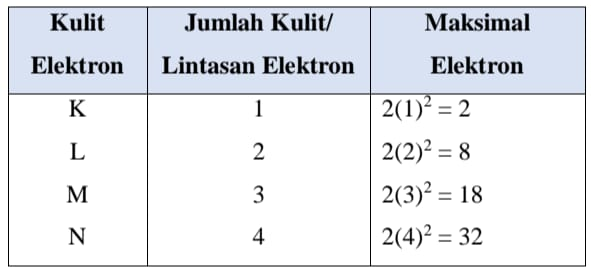
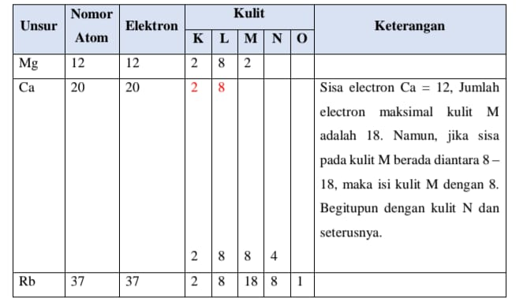
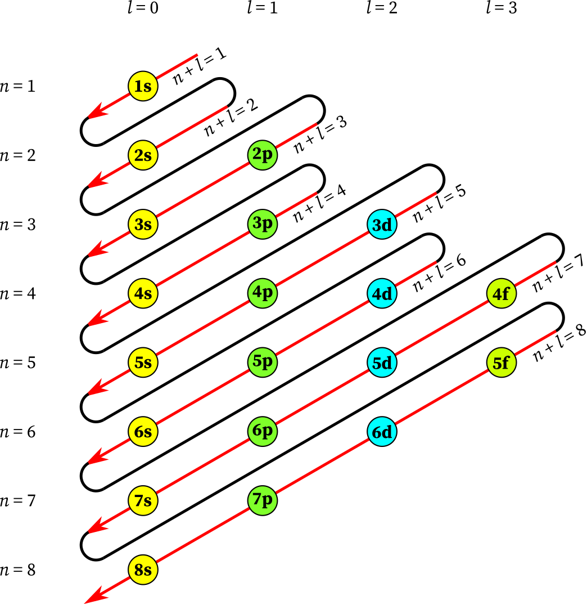

Konfigurasi Elektron
Konfigurasi Elektron
Dalam pembentukan materi, electron memiliki peranan penting karena dapat terjadinya pelepasan maupun penangkapan electron guna menjaga kestabilan atom. Elektron yang berperan penting tersebut adalah electron terluar yang dinamakan dengan electron valensi. Penentuan electron valensi dapat dilakukan dengan menuliskan konfigurasi elektronnya. Terdapat dua model atau jenis utama dalam konfigurasi electron, yaitu model kulit atom (Bohr) dan model subkulit (mekanika kuantum/orbital).
klik untuk menonton video
Konfigurasi electron model ini ditemukan oleh Niels Bohr, oleh karena itu konfigurasi electron model ini sering juga disebut dengan konfigurasi electron Bohr. Menurut Bohr, electron mengelilingi inti atom pada lintasan tertentu dengan tingkat energy yang berbeda pada setiap lintasannya. Lintasan tersebut dinamakan juga sebagai kulit atom. Kulit electron paling dekat dengan inti atom disebut kulit K, berikutnya kulit L, M, N, dan seterusnya.
Berdasarkan teori ini, electron pada atom harus diisikan dari tingkan energy terendah ke tingkat energy yang tinggi dengan jumlah electron maksimal yang berbeda pada setiap kulitnya. Banyaknya electron yang mengisi kulit atom mengikuti rumus 2n2. Adapun urutan kulit atom menurut Bohr dari tingkat energy terendah adalah sebagai berikut:

Untuk menambah pemahaman kamu, perhatikan contoh berikut!
Buatkan konfigurasi electron untuk magnesium, kalsium, dan rubidium dengan nomor atom Mg = 12, Ca = 20, Rb = 37
Penyelesaian:
Hal yang harus kalian ingat, bahwa dalam konfigurasi electron jumlah partikel yang kita gunakan adalah electron.

Dengan memperhatikan tabel di atas, apakah kamu sudah paham konfigurasi electron Bohr?
klik untuk menonton video
Konfigurasi electron model ini lebih kompleks dibandingkan konfigurasi electron Bohr. Konfigurasi ini menekankan kebolehjadian ditemukannya electron pada suatu orbital dalam subkulit atom. Orbital dibagi menjadi empat, yaitu s, p, d, dan f. terdapat beberapa prinsip dalam konfigurasi electron model ini, diantaranya:
- Prinsip Aufbau
- Prinsip Larangan Pauli
- Aturan Hund
Prinsip Aufbau menyatakan bahwa elektron akan mengisi orbital dengan tingkat energi paling rendah terlebih dahulu sebelum mengisi orbital dengan energi yang lebih tinggi. Urutan tingkat energi orbital adalah:

Urutannya mengikuti tanda panah tersebut, untuk memudahkan kamu dalam menghafal urutannya, perhatikan penjelasan di bawah ini
s s ps ps dps dps fdps
lihat polanya hanya sebuah pengulangan, dengan memperhatikan urutan di atas kamu akan lebih mudah untuk menghafalnya. Untuk angka di depan setiap huruf tinggal kamu tambahkan dengan s dimulai dari angka 1, p dimulai dari angka 2, d dimulai dari angka 3, dan f dimulai dari angka 4
1s → 2s → 2p → 3s → 3p → 4s → 3d → 4p → 5s → 4d → 5p → 6s → 4f → 5d → 6p → 7s
Prinsip larangan Pauli menyatakan bahwa dalam satu orbital maksimal hanya dapat ditempati oleh dua elektron, dan kedua elektron tersebut harus memiliki spin yang berlawanan.
Aturan Hund menyatakan bahwa elektron akan mengisi orbital yang setingkat energinya secara satu per satu terlebih dahulu dengan arah spin yang sama, sebelum berpasangan.
Contoh:
Pada orbital p terdapat 3 kota orbital. Elektron akan mengisi:
| ↑ | ↑ | ↑ |
baru kemudian berpasangan.
| ↓↑ | ↓↑ | ↓↑ |
Selain memperhatikan prinsip pada konfigurasi electron, perhatikan juga jumlah jumlah orbital dan maksimum electron yang dapat mengisi pada setiap subkulitnya
Buatkan konfigurasi electron untuk magnesium, kalsium, dan rubidium dengan nomor atom Mg = 12, Ca = 20
Penyelesaian
Mg --> jumlah electron 12
Tuliskan urutan tingkat energy berdasarkan prinsip Aufbau
1s 2s 2p 3s 3p 4s //Jika urutan yang ditulis kelebihan, nantinya bisa kamu hapus
Isi setiap orbital dengan jumlah maksimum electron
1s2 2s2 2p6 3s2
Jumlah electron yang terisi pada orbital sudah sama dengan jumlah electron Mg :
2 + 2 + 6 + 2 = 12
Jadi, konfigurasi electron untuk Mg adalah 1s2 2s2 2p6 3s2
Ca --> jumlah electron 20
Tuliskan urutan tingkat energy berdasarkan prinsip Aufbau
1s 2s 2p 3s 3p 4s //Jika urutan yang ditulis kelebihan, nantinya bisa kamu hapus
Isi setiap orbital dengan jumlah maksimum electron
1s2 2s2 2p6 3s2 3p6 4s2
Jumlah electron yang terisi pada orbital sudah sama dengan jumlah electron Mg :
2 + 2 + 6 + 2 + 6 + 2 = 20
Jadi, konfigurasi electron untuk Mg adalah 1s2 2s2 2p6 3s2 3p6 4s2
Menentukan Periode dan Golongan
Berdasarkan Konfigurasi Bohr
Tabel periodik disusun berdasarkan nomor atom dan konfigurasi elektron. Letak unsur menunjukkan sifat-sifatnya.
Periode menunjukkan jumlah kulit elektron.
Contoh:
Na = 2, 8, 1
Jumlah kulit = 3
→ Periode 3
Golongan menunjukkan jumlah elektron valensi.
Contoh:
| Unsur | Konfigurasi | Elektron Valensi | Golongan |
| Na | 2, 8, 1 | 1 | Golongan 1 |
| Mg | 2, 8, 2 | 2 | Golongan 2 |
| Cl | 2, 8, 7 | 7 | Golongan 7 |
Unsur dalam satu golongan memiliki sifat kimia yang mirip.
Berdasarkan Konfigurasi Orbital
Tabel periodik disusun berdasarkan nomor atom dan konfigurasi elektron. Letak unsur menunjukkan sifat-sifatnya.
Periode suatu unsur dalam tabel periodik dapat ditentukan dari bilangan kuantum utama (n) terbesar pada konfigurasi elektron. Dengan kata lain, angka kulit terbesar yang terisi elektron menunjukkan nomor periode unsur tersebut.
Contoh 1: Natrium (Na)
Nomor atom = 11
Konfigurasi elektron:
1s² 2s² 2p⁶ 3s¹
Kulit terbesar = 3
Jadi, Periode Natrium (Na) adalah 3
Contoh 2: Kalsium (Ca)
Nomor atom = 20
Konfigurasi elektron:
1s² 2s² 2p⁶ 3s² 3p⁶4s¹
Kulit terbesar = 4
Jadi, Periode Kalsium (Ca) adalah 4
Cara menentukan golongan berbeda tergantung pada jenis unsur
- Unsur Golongan Utama (Golongan A)
- Unsur Golongan Transisi (Golongan AB
Untuk unsur golongan utama, jumlah elektron pada subkulit s dan p pada kulit terluar menunjukkan nomor golongan.
Rumus sederhana:
Untuk menambah pemahaman kamu, simak contoh di bawah ini!
Contoh 1: Natrium (Na)
Konfigurasi elektron:
1s² 2s² 2p⁶ 3s¹
Elektron pada:
3s = 1
Elektron valensi : 1
Jadi, golongan Natrium (Na) adalah IA (Golongan 1A)
Contoh 2: Klorin (Cl)
Konfigurasi elektron:
1s² 2s² 2p⁶ 3s² 3p⁵
Elektron pada:
3s = 2
3p = 5
Tota: 7 --> Elektron valensi : 7
Jadi, golongan Klorin (Cl) adalah VIIA (Golongan 7A)
Untuk unsur golongan utama, jumlah elektron pada subkulit ns dan (n-1)d pada kulit terluar menunjukkan nomor golongan.
Rumus sederhana:
Untuk menambah pemahaman kamu, simak contoh di bawah ini!
Contoh 1: Besi (Fe)
Nomor atom = 26
Konfigurasi elektron:
1s² 2s² 2p⁶ 3s² 3p⁶ 4s² 3d⁶
Elektron pada:
4s = 2
3d = 6
Total : 8 --> Elektron valensi : 1
Jadi, golongan Besi (Fe) adalah VIIIB (Golongan 8B)
Ringkasan Cara Menentukan Periode dan Golongan
| Langkah | Cara Menentukan |
| Periode | Angka kulit terbesar pada konfigurasi elektron |
| Golongan A | Jumlah elektron (s + p) |
| Golongan B | Jumlah elektron pada orbital s dan d |
Golongan A
Pilihlah golongan dan periode untuk setiap unsur di bawah!